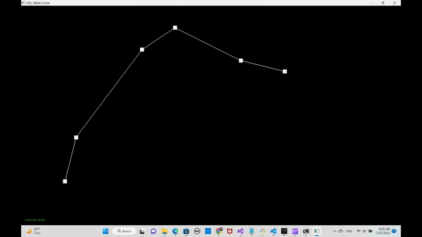

Overview
YOUR RESPONSE GOES HERE
Section I: Bezier Curves and Surfaces
Part 1: Bezier Curves with 1D de Casteljau Subdivision
Briefly explain de Casteljau's algorithm and how you implemented it in order to evaluate Bezier curves.de Casteljau's algorithm is a way to find a point that lies on the Bezier curve. Given a set of control points, de Casteljau's algorithm can return the point that definitely lies on the Bezier curve defined by the control points. In this question, we only implemented one level of de Castelja's algorithm at a time. By taking every pair of two neigboring points and linearly interpolate them, we got the next level of points.
Take a look at the provided .bzc files and create your own Bezier curve with 6 control points of your choosing. Use this Bezier curve for your screenshots below.
Show screenshots of each step / level of the evaluation from the original control points down to the final evaluated point. Press E to step through. Toggle C to show the completed Bezier curve as well.
|
|
|

|

|

|
A slightly different Bezier curve by moving the original control points around and modifying the parameter \(t\) via mouse scrolling:

Part 2: Bezier Surfaces with Separable 1D de Casteljau
Briefly explain how de Casteljau algorithm extends to Bezier surfaces and how you implemented it in order to evaluate Bezier surfaces.YOUR RESPONSE GOES HERE
Show a screenshot of bez/teapot.bez (not .dae) evaluated by your implementation.
YOUR RESPONSE GOES HERE
Section II: Triangle Meshes and Half-Edge Data Structure
Part 3: Area-Weighted Vertex Normals
Briefly explain how you implemented the area-weighted vertex normals.YOUR RESPONSE GOES HERE
Show screenshots of dae/teapot.dae (not .bez) comparing teapot shading with and without vertex normals. Use Q to toggle default flat shading and Phong shading.
YOUR RESPONSE GOES HERE
Part 4: Edge Flip
For this part, our implementation followed several steps. First, we check if the targeted edge is on the boundary. If it is, we do nothing, since flipping an edge on the boundary doesn't make sense. If it's not, we proceed to edge flip. We first collect all elements (including halfedges, edges, vertices, and faces) using the left diagram below. Elements are collected following the Half-Edge Data Structure. For example, to get h3, we call twin on h0; to get h1, we call next on h0; to get e0, we call edge on h0; and to get f0, we call face on h0. Then, we reassign all elements according to the right diagram.
 |
 |
Diagram source: CMU CS 15-462: Guide To Implementing Edge Operations On A HalfEdge Data Stuctures
Below are pictures of the teapot before and after some edge flips.
 |
 |
Part 5: Edge Split
The implementation for edge split is similar to that of edge flip. First, we check if the targeted edge is on the boundary. If it is, we do not split. If it's not, we proceed to following steps. We first collect all elements (including halfedges, edges, vertices, and faces) using the left diagram below, just as in part 4. Elements are collected following the Half-Edge Data Structure. For example, to get h3, we call twin on h0; to get h1, we call next on h0; to get e0, we call edge on h0; and to get f0, we call face on h0. Then, we reassign all elements according to the right diagram.
 |
 |
Below are pictures of the cow before and after some edge splits and edge flips.
 |
|
 |
Part 6: Loop Subdivision for Mesh Upsampling
Briefly explain how you implemented the loop subdivision and describe any interesting implementation / debugging tricks you have used.To acheive upsampling, we implemented loop subdivision according to the following steps. First, we calculate the new position for all old vertices in the edge. We also calculate new position for new vertices. Since new vertices are not yet created, we store this value temporarily in new vertices' corresponding edges. New position for vertices will allow the mesh to be smoother when we upsample, dividing triangles into smaller triangles. Next, we split all original edges in the mesh. We also mark complete new (excluding those that are seperated from previous edges) edges and new vertices; this property is used in the next step. Then, we flip all new edges that connects a new vertex and an old vertex.
Take some notes, as well as some screenshots, of your observations on how meshes behave after loop subdivision. What happens to sharp corners and edges? Can you reduce this effect by pre-splitting some edges?
YOUR RESPONSE GOES HERE
Load dae/cube.dae. Perform several iterations of loop subdivision on the cube. Notice that the cube becomes slightly asymmetric after repeated subdivisions. Can you pre-process the cube with edge flips and splits so that the cube subdivides symmetrically? Document these effects and explain why they occur. Also explain how your pre-processing helps alleviate the effects.
YOUR RESPONSE GOES HERE
If you have implemented any extra credit extensions, explain what you did and document how they work with screenshots.
YOUR RESPONSE GOES HERE
Part 7 (Optional, Possible Extra Credit)
Save your best polygon mesh as partsevenmodel.dae in your docs folder and show us a screenshot of the mesh in your write-up.YOUR RESPONSE GOES HERE
Include a series of screenshots showing your original mesh and your mesh after one and two rounds of subdivision. If you have used custom shaders, include screenshots of your mesh with those shaders applied as well.
YOUR RESPONSE GOES HERE
Describe what you have done to enhance your mesh beyond the simple humanoid mesh described in the tutorial.
YOUR RESPONSE GOES HERE
Website Link: https://cal-cs184-student.github.io/project-webpages-sp23-qs/proj2/index.html